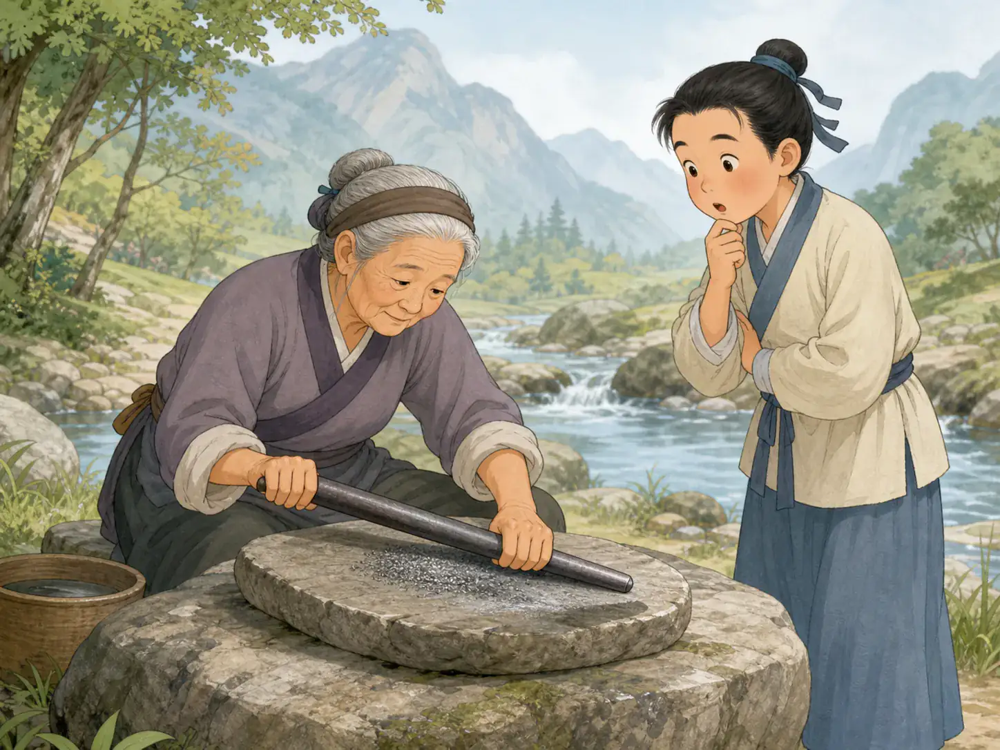

铁杵磨成针
Grind an Iron Rod into a Needle

A thick iron rod looks nothing like a needle, yet the story says steady effort can slowly change it.
有个很有名的故事，说Lǐ Bái · 唐代诗人，以豪放的想象和月亮、旅行等题材闻名。小时候不想读书，跑出去玩。路上，他看见一位老奶奶坐在溪边，拿着一根铁棒在石头上磨。李白问她在做什么。老奶奶说：“我要把它磨成针。”这话听起来太夸张了，可也正因为夸张，大家一下就记住了。后来，人们常用“铁杵磨成针”这个故事来告诉人：你现在觉得太难的事，只要一直做下去，也可能真的慢慢做成。
One famous story says that when Lǐ Bái · 李白 · A Tang poet known for bold imagination, moonlight, and travel. was young, he did not want to study and ran off to play. On the way, he saw an old woman by a stream, grinding an iron rod against a stone. Li Bai asked what she was doing. She said, “I am grinding it into a needle.” The idea sounds impossible, and that is exactly why people remember it so well. Later, people used the story to say that even a task that seems far too hard right now may still be finished if you keep going long enough.